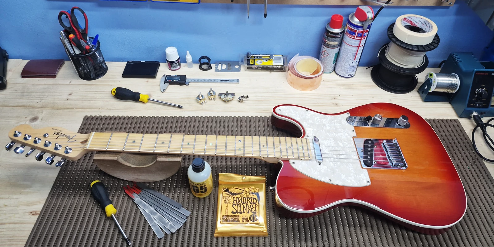
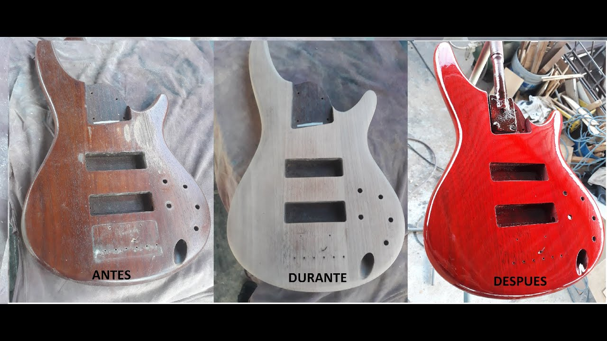

Restauración de guitarra vintage
Revisamos la electrónica, limpiamos los componentes, ajustamos el puente y realizamos una puesta a punto completa. El objetivo fue mejorar su funcionamiento sin borrar las marcas de su historia.
Documentamos cada restauración para mostrar el diagnóstico, las tareas realizadas y el resultado obtenido sin perder el carácter original del instrumento.

Revisamos la electrónica, limpiamos los componentes, ajustamos el puente y realizamos una puesta a punto completa. El objetivo fue mejorar su funcionamiento sin borrar las marcas de su historia.
Evaluamos el estado de la electrónica, los herrajes y la estructura.
Conservamos las piezas originales y reemplazamos solo lo necesario.
Ajustamos el instrumento y comprobamos su funcionamiento final.
El registro del proceso permite comparar cada etapa y comprobar cuánto puede recuperarse sin perder la identidad del instrumento.
